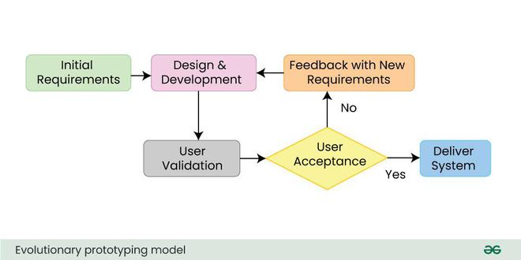

2.4 Prototype Model / Software Prototyping
The Prototype Model is an SDLC approach in which the team builds a working model (prototype) of the system — or of critical parts of it — early in the project so that users and developers can see, use, and critique realistic behaviour before committing to full-scale design and coding. The prototype may be a screen mock-up with simulated data, a partial implementation of core workflows, or a throwaway script; the essential idea is learning by doing rather than relying only on written requirements.
Software Prototyping appears as a separate item on the course syllabus outline. In exams, treat it as covering both (1) prototyping as a requirements-engineering technique used inside other models (e.g., Spiral risk reduction), and (2) the Prototype Model as a named SDLC process where prototyping drives the main flow of the project.
Why prototyping is needed
Many projects fail because stakeholders and developers interpret the same words differently. Users often cannot articulate needs until they see a system. Written SRS documents are abstract; prototypes make requirements concrete. The Prototype Model is therefore chosen when:
- Requirements are incomplete, ambiguous, or conflicting.
- The user interface or human workflow is central (booking systems, dashboards, mobile apps).
- The domain is new to the development team (first version of a product category).
- Stakeholders need early proof that an idea is feasible before large funding is approved.
Contrast with Classical Waterfall (§2.2), which assumes requirements are complete before design. Prototyping deliberately delays freezing the SRS until experience with a model reduces uncertainty.

Phases of the Prototype Model (general flow)
Textbooks and GFG describe a repeating cycle followed by a final construction phase. Use these phases in long answers and link them to the diagram above.
- Requirement gathering (initial) — collect a partial set of known requirements; accept that many details are unknown. Produce a draft SRS or user stories, not a final contract.
- Quick / rough design — focus on screens, workflows, and data visible to users; ignore optimisation, full security hardening, and production scalability for now.
- Build prototype — implement using rapid tools (UI builders, scripting languages, mock APIs). Speed matters more than clean architecture in throwaway mode.
- User evaluation — users perform realistic tasks; analysts record gaps, wrong assumptions, and new requirements. Manage expectations: label it a prototype, not the finished product.
- Refine requirements — update SRS, wireframes, and acceptance criteria. If still unclear, loop back to quick design and another prototype version.
- Final implementation — once stakeholders agree on requirements, build the production system with proper architecture, testing, and documentation. In throwaway prototyping, the prototype code is discarded; in evolutionary prototyping, the prototype is extended (see below).
Types of prototyping
Exams almost always ask you to compare throwaway and evolutionary prototyping. Learn the table and be able to give examples of each.
| Aspect | Throwaway (rapid) prototyping | Evolutionary prototyping |
|---|---|---|
| Purpose | The prototype is used only to clarify and validate requirements. | The prototype is used to deliver the product incrementally until it becomes the final system. |
| Fate of prototype code | The prototype code is discarded after the SRS is stable. | The prototype code is kept and extended in each iteration. |
| Final system | The final system is built from scratch using proper engineering practices. | The final system evolves directly from the prototype codebase. |
| Documentation | Documentation is light during exploration, and the SRS is updated at the end. | Documentation must improve over time, or technical debt will accumulate. |
| Risk | Effort is wasted if lessons from the prototype are not captured in the SRS. | Technical debt and poor structure arise if the team does not refactor regularly. |
| Best when | Requirements are very unclear and the user interface must be discovered. | Requirements evolve, but a usable core of the system can be built early. |
1. Throwaway (rapid) prototyping
The team builds a quick, disposable prototype solely to explore the problem space. Tools may include paper sketches, Figma mock-ups, or a “quick and dirty” web demo with fake data. When users and analysts agree on what the system should do, developers throw away the prototype and implement the real system with maintainable code, proper database design, and full test coverage.
- Focus. The team concentrates on understanding what the system must do, not on how it will be built in production.
- Speed. The team uses rapid tools such as 4GLs, scripting, UI generators, or AI-assisted mock-ups to shorten feedback time.
- Deliverable of the prototyping phase. The main output is an improved, detailed SRS, not the prototype program itself.
- Exam trap. Throwaway prototyping does not mean “no documentation”; the effort is wasted if user feedback is not written into the SRS.
Example — University course registration: Students cannot describe every edge case in interviews. The team builds a clickable prototype in two weeks. Users discover needs for wait-lists, prerequisite checks, and mobile layout. The prototype is discarded; the production system is built in Java with a proper database.

2. Evolutionary prototyping
The first prototype is a core subset of the system (e.g., login + one main feature). Users evaluate it; developers add features and improve quality in later iterations until the prototype becomes the delivered product. No separate “big bang” rewrite as in throwaway mode.
- Advantage: Working software from early iterations. Users see continuous progress.
- Risk: prototype code written for speed may lack modularity. Requires refactoring and coding standards in later iterations.
- Relation to evolutionary development (§2.6): evolutionary prototyping is one form of building the system through repeated extension.
Example — Startup mobile app: Version 0.1 shows profile and feed; version 0.2 adds messaging; each release is the same codebase grown outward. Investors see a live product early.
Other prototyping terms (short definitions)
- Horizontal prototype. This type covers many features at shallow depth, such as many screens with little underlying logic.
- Vertical prototype. This type implements one feature fully through all layers (user interface, logic, and database) to prove feasibility.
- Paper prototype. These are hand-drawn sketches used in very early workshops; they are the cheapest form of prototyping.
- Operational prototype. This type focuses on performance or algorithm behaviour, for example whether search meets the required response time.
Prototype Model vs Waterfall and Iterative Waterfall
| Aspect | Waterfall / Iterative Waterfall | Prototype Model |
|---|---|---|
| When requirements are fixed | Requirements are treated as fixed early, or refined only through formal feedback loops. | Requirements are frozen only after one or more prototyping cycles. |
| First deliverable to user | The user first receives documents, and working software appears late. | The user receives prototype screens or an executable model early in the project. |
| Handling vague UI | Waterfall is a poor fit when the user interface is unclear. | The Prototype model is a strong fit when the user interface must be explored. |
| Cost of wrong requirements | The cost is high if wrong requirements are discovered only during testing. | The cost is lower because mistakes are often found during prototype evaluation. |
Advantages of the Prototype Model
- Clarifies requirements early — users react to something tangible; missing rules and conflicting goals surface before large development cost.
- Improves communication — developers, managers, and customers share a common reference (the prototype).
- Reduces development risk — wrong product direction is corrected cheaply compared to rewriting a finished system.
- Supports usability evaluation — navigation, layout, and accessibility can be tested with real users.
- Helps estimation — after a vertical prototype, the team can estimate effort for the full build more accurately.
- Stakeholder confidence — sponsors see progress and are more likely to continue funding (especially evolutionary path).
Disadvantages and limitations
- User expectation management — users may think the rough prototype is nearly finished (“Why does it take six more months?”). Must label versions, use greyscale UI, or disclaim performance.
- Scope creep — each demo invites new features; needs strong product owner and change control.
- Throwaway effort wasted — if the team does not update the SRS, the prototype was pointless.
- Evolutionary technical debt — quick hacks in early iterations may corrupt architecture unless time is budgeted for refactoring.
- Non-functional requirements — security, load, and reliability are hard to judge from a light prototype; separate spikes or benchmarks may be needed.
- Not for all domains — safety-critical firmware or batch-only backends with no UI gain less from UI-centric prototyping.
- Documentation neglect — teams focused on demos may skip traceability; dangerous for regulated systems unless corrected before final build.
When to use the Prototype Model
- Requirements are unclear or unstable at project start.
- Human-computer interaction is a major success factor.
- Customer cannot evaluate a paper SRS but can use a demo.
- Project is medium risk and needs early validation before Waterfall-style full specification.
- Combines well with Spiral model (§2.5). Prototypes built in the “resolve risks” quadrant.
When NOT to use
- Requirements are already complete and legally fixed (strict Waterfall or V-Model may suffice).
- Primary risks are algorithmic or performance. Need vertical/operational prototypes or proofs, not UI mock-ups alone.
- Organisation lacks discipline to discard or refactor. Evolutionary prototypes become unmaintainable legacy code.
- Tight fixed-price contract with no allowance for requirement evolution after demos.
Step-by-step exam scenario (throwaway)
- Bank wants a new loan calculator web app. Business rules are spread across emails and spreadsheets.
- Analysts run workshops and build a throwaway HTML/JS prototype with sample rates.
- Loan officers test scenarios. Discover missing rules for Islamic finance products and early repayment.
- SRS v2.0 is written. Prototype is archived and discarded.
- Production system is developed with secure APIs, audit logs, and penetration testing. None of which were in the prototype.
Relation to syllabus and other topics
- Syllabus outline — Software Prototyping: satisfied by this section (technique + Prototype Model).
- Spiral model (§2.5): uses prototypes to reduce specific risks each cycle.
- RAD (§2.9): relies on fast prototyping and user workshops. Overlapping ideas, different emphasis (time-boxing).
- Agile (§2.11): every sprint delivers incrementally. Similar spirit to evolutionary prototyping.
Q: Explain the Prototype Model of software development. Describe its phases with a diagram. Differentiate between throwaway and evolutionary prototyping with examples. Discuss advantages, disadvantages, and situations where prototyping is appropriate or inappropriate.
Model answer outline:
- Define the Prototype model as building an early working model that users evaluate before full development, and note that the syllabus item Software Prototyping covers both the technique and the SDLC model.
- Explain why prototyping is used when requirements are vague, the user interface is critical, or users cannot express needs from documents alone.
- Describe the throwaway cycle: requirements, quick design, prototype, user evaluation, refined SRS, repeated loops, then final implementation after discarding the prototype.
- Describe evolutionary prototyping as repeated refinement of the same codebase until it becomes the delivered product.
- List the six phases of the prototype model and state the purpose of each in full sentences.
- Compare throwaway and evolutionary prototyping using purpose, fate of code, documentation, risks, and when to use each.
- Give examples such as university registration (throwaway) versus a startup app (evolutionary).
- Mention horizontal, vertical, paper, and operational prototypes if the question asks for types.
- Discuss advantages, disadvantages, suitable and unsuitable projects, and contrast with Waterfall (late versus early requirements freeze).
MCQ (GFG style): In throwaway prototyping, the prototype is — (B) Discarded after requirements are clarified.
MCQ: In evolutionary prototyping, the final system is — (C) Developed by extending the prototype over iterations.